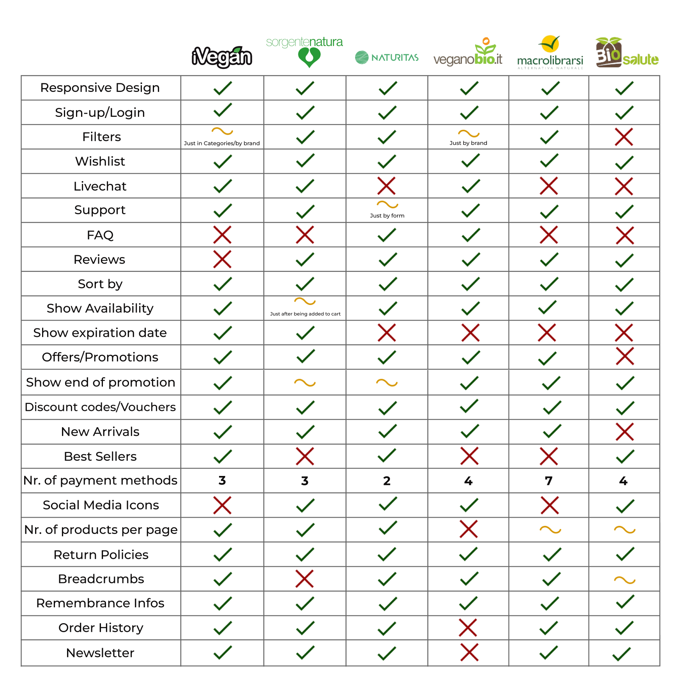
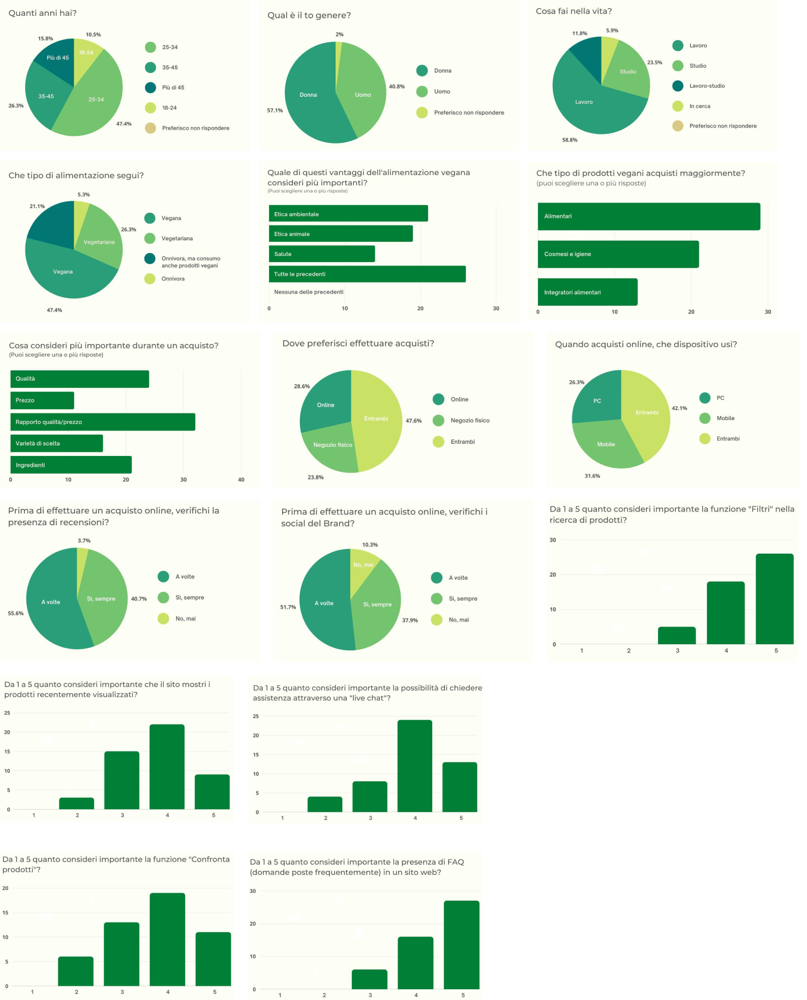
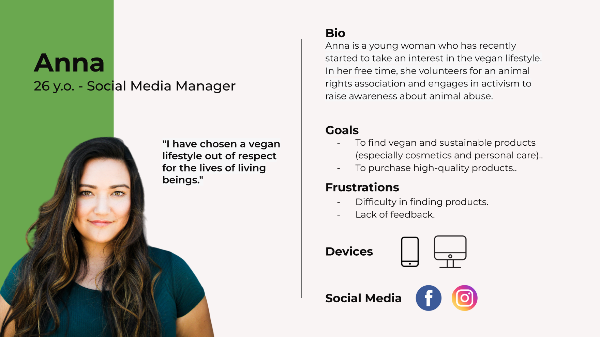
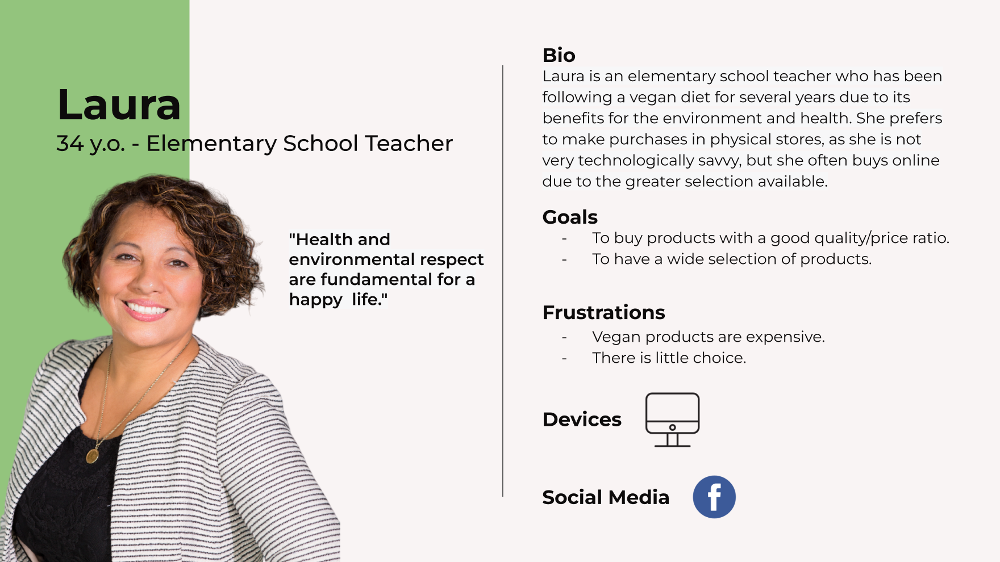
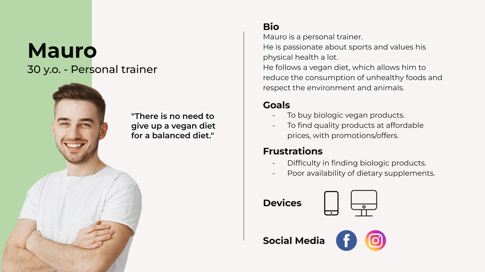
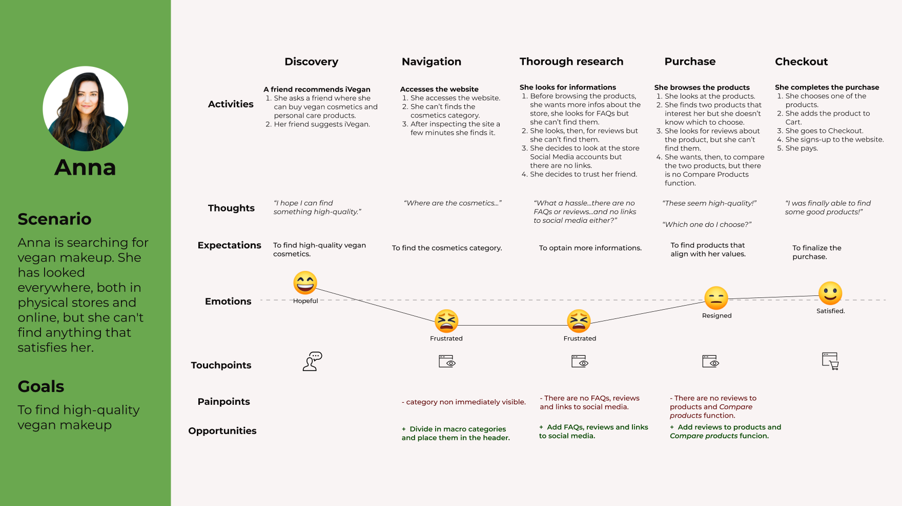
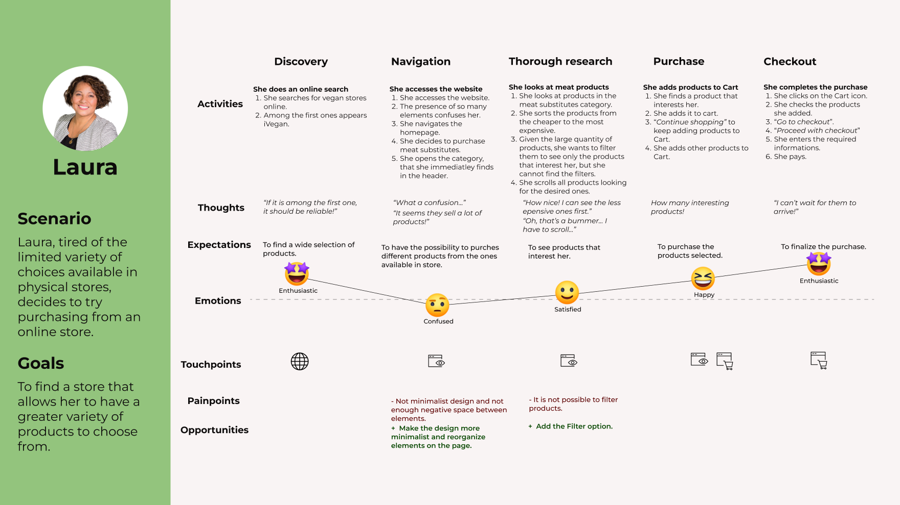
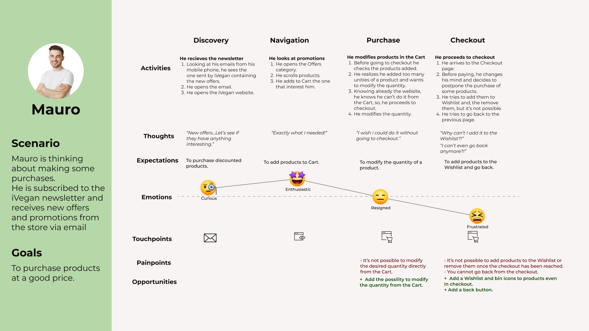
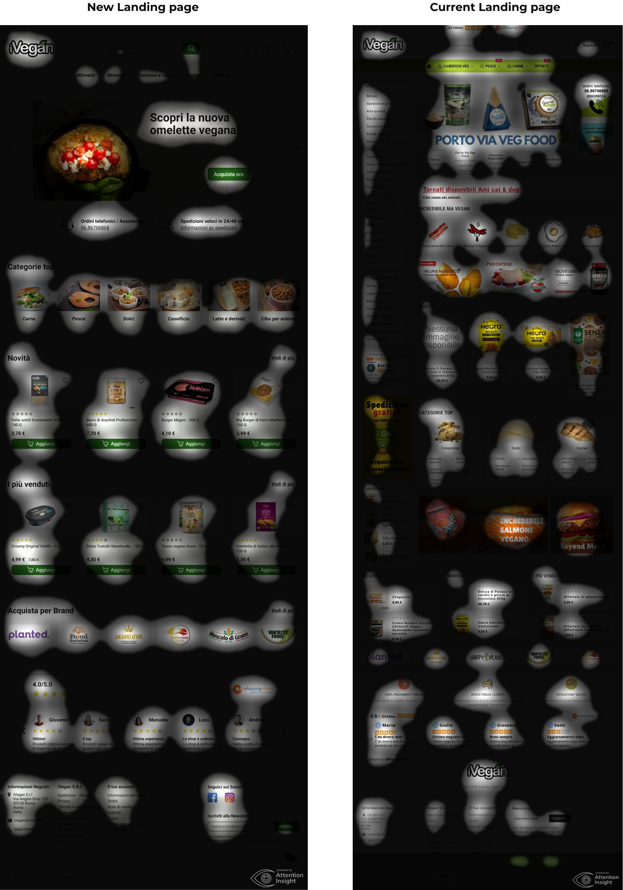

Redesign
Vegan E-commerce
A redesign of iVegan’s website, an italian e-commerce that sells organic and vegan producs.
A redesign of iVegan’s website, an italian e-commerce that sells organic and vegan producs.
iVegan is the largest Italian distributor of vegan food, delivering throughout the country quickly and efficiently thanks to the option to purchase online or by visiting the store in Rome. The company is committed to offering a wide selection of products, organic and cruelty-free, prioritizing quality by selecting from the best artisanal businesses and large companies specialized in the sector.
User and Market Research, Wireframing, UI Design, User Testing.
To determine whether the current desktop and mobile versions of the website comply with usability and functionality criteria, an analysis was conducted using Nielsen's 10 heuristics. This allowed me to identify the strengths and weaknesses of the iVegan website.
To determine iVegan's strengths and weaknesses compared to other companies operating in the same market, a comparative analysis was carried out with 5 of the main vegan stores.
The direct competitors of iVegan are Italian e-commerce companies that sell vegan and organic products, both food and non-food.
From the analysis emerged the differences between iVegan's website and those of the analyzed competitors.
Strengths: presence of a live chat, indication of product expiration date, display of best-selling products.
Weaknesses: lack of FAQ and reviews, limited filtering options, no link to social media profiles, fewer payment options compared to most competitors.
iVegan's target audience was identified by observing reviews on the web and analyzing interactions on social media profiles (Facebook and Instagram).
From research on the web and social media, a mixed target audience emerged, consisting mainly of women, aged between 25 and 35 years old, with a medium to medium-high income range.
To verify the accuracy of the research and obtain additional insights into the lifestyle and purchasing habits of the target audience, a 16-question survey was administered to a group of people who follow a vegan lifestyle. The survey collected 49 responses, obtained from friends, relatives, and users on social media groups dedicated to the vegan lifestyle.
57% of the respondents to the questionnaire are women, aged between 25 and 34. The users are mostly workers (59%). 47% follow an exclusively vegan diet and mainly purchase food products, prioritizing the quality/price ratio. The majority of users make purchases both in-store and online (48%), with 28% preferring online over physical stores, and using both PC and mobile devices to make purchases (42%). For users, the presence of filters and FAQs on a website is very important, followed by recently viewed products, live chat, and the Compare Products function.
With the data optained from the research and survey, i was able to create three Personas representing three different user groups, with different expectations, needs and goals.
  I created a User Journey Map to identify the pain points and feelings the user may go through while using the current website and the possible improvement opportunities.
  I created wireframes for 5 pages.
To ensure the best functionality of the website i designed the wireframes Mobile-first.
To create a consinstent design I started with low-fidelity wireframes drawn on paper, that I, then, recreated digitally in High-fidelity with Figma, following a Grid and a typographic scale, which allowed me to reorganize the elements present on the website and improve their hierarchy, making the website look more minimalistic.
Firstly, I created a design system that contains information about the grids used, the spacing between elements, typography size and weight, icons and the different button and forms in various states. Starting from the logo design, I identified the colors to be used, analyzing their contrast, to ensure good accessibility and readability.
Then, I moved on to designing the pages and the way in which the user will interact with them and the elements present, creating an interface with a minimal appearance and easy-to-understand functionality.

To better show the difference between the two designs, a focus map was also structured, which confirms what emerged from the Heatmap. Attention is distributed more evenly in the new design, allowing important elements (Hero, product cards, CTA) to be better identified and attract the user's attention more effectively.
In addition, in the new design, there are significantly fewer elements that go unnoticed (in particular, on the current website, the categories of products offered by iVegan, located on the left side of the page, go mostly unnoticed).
